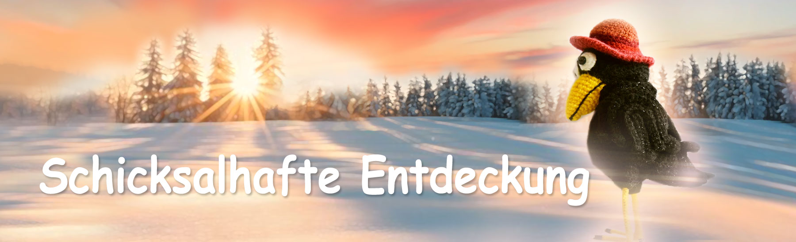
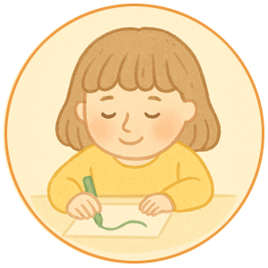

Märchen von Philomur, dem Kater
getreu aufgezeichnet von seinem treuen Bewunderer — Michel, dem Rattenjungen

Die schicksalhafte Begegnung
Kapitel 1 | Kapitel 2 | Kapitel 3 | Kapitel 4 | Kapitel 5
Kapitel 1. Eine ungewöhnliche Begegnung
Der Sommertag war so klar, dass es schien, als würde die Luft selbst leuchten. Ein leichter Dunst schwebte über dem Teich; die Lichtung roch nach warmem Gras und Staub. Agatha die Krähe saß im Gebüsch auf ihrem gewohnten Ast — allein, wachsam, beobachtend — und drehte neugierig einen seltsamen glänzenden Gegenstand in ihren Krallen — ein Smartphone. Es fing die Sonne ein und gab sie als gleichmäßigen, kalten Glanz zurück. Agatha studierte das Glas, tippte hier und dort mit der Kralle, lauschte den leisen Klicks und Geräuschen — als hielte sie ein kleines lebendiges Wesen, das gezähmt werden musste.
In diesem Moment schwirrte Biene Zhuzha über die Büsche — geschäftig und neugierig wie der Klatsch selbst. „Hallo, Agatha!“, summte sie und schwebte in der Luft neben ihr, ihre Flügel schlugen schnell. „Oh… was hast du denn da?!” Agatha schob das Telefon vorsichtig unter ihren Flügel — aus Vorsicht, nicht aus Gier. „Ein Telefon.“ „Es ist so hübsch!“ Zhuzha streckte den Hals und drückte beinahe ihren Rüssel an den Bildschirm. „Wo hast du das her? Hast du es gestohlen?!“
Agatha hob scharf eine Augenbraue — beleidigt und empört, so wie es nur respektable erwachsene Krähen können. „Was sagst du da, Zhuzha! Ich habe nichts gestohlen. Ich habe es gefunden.“ „Wo?“ „Im Arbeitszimmer von Wassili Woldemarowitsch. Auf dem Schreibtisch. Jemand hat es fallen lassen… wahrscheinlich verloren.“ Zhuzha schämte sich keine Sekunde — ihre Neugier platzte förmlich. „Ah! Richtig! Lass mich sehen!“ „Was, du hast noch nie ein Handy gesehen? Es ist nur ein Telefon.“
„Nicht ‚nur‘!“ Zhuzha hüpfte vor Freude in der Luft. „Sieh mal, wie es leuchtet! Hat es Internet?“ „Nun… ja.“ „Und TikTok?“ „Nein.“ „Schade“, seufzte Zhuzha, als hätte die Welt jeden Sinn verloren. „Es hat Facebook“, bemerkte Agatha trocken, und ein Hauch von Stolz lag in ihrer Stimme: Sie kannte dieses Wort. Zhuzha schnaubte. „Das ist Müll.“ Agatha klapperte verärgert mit dem Schnabel. „Das ist überhaupt kein Müll.“
„Oh!“ Zhuzha beugte sich näher, ihre kleinen Augen wurden runder. „Schau! Es hat KI! Das ist X-31! Großartig!“ Agatha bewegte den Flügel so, wie es anständige Damen tun, wenn sie Unsinn hören. „Ach… das. Ich benutze es nicht.“ „Was?! Es ist fantastisch! Er weiß alles! Er kann jede Frage beantworten!“ „Das brauche ich nicht. Ich kann alles selbst im Internet finden.“ „Nein, du verstehst nicht. Er schreibt ganze Blogs für Karl-Magnus!“ „Dann soll er schreiben. Was geht mich das an? Dieser Unsinn interessiert mich nicht.“
„Agatha“, zog Zhuzha in die Länge, „probier es einfach. Eine Frage. Sieh, wie es funktioniert.“ Agatha blickte wieder auf den Bildschirm. Er leuchtete hell und selbstbewusst — wie ein kleiner Spiegel. „Ich weiß nicht einmal, was ich fragen soll.“ Zhuzha grinste breit. „Darf ich?“ „Natürlich.“ Agatha drehte den Bildschirm leicht zu Zhuzha. Ordentliche Zeilen erschienen auf dem Display — höflich, gleichmäßig, fast angenehm, wie ein Berater in einer Luxusuhren-Boutique: „Hallo. Vielen Dank für Ihre Anfrage. Ich bin X-31 — ein intelligenter Assistent. Wie kann ich Ihnen helfen?“
Zhuzha keuchte vor Begeisterung, als hätte man ihr Tee in einer goldenen Tasse serviert. „Sag mir“, platzte sie heraus, ohne Zeit zu verlieren, „gab es wirklich ‚etwas‘ zwischen Rita dem Gänseblümchen und Archibald dem Käfer?“ Agatha errötete vor Verlegenheit. „Zhuzha! Warum fragst du so etwas?! Das ist peinlich!“ Zhuzha winkte mit der kleinen Pfote. „Entspann dich, Agatha. Es ist KI. Du kannst ihn fragen.“
Die Antwort erschien sofort — und völlig gelassen: „Ich habe keine verlässlichen Informationen über die private Beziehung der genannten Individuen. Aus biologischer Sicht sind Mitglieder der Flora und Arthropoden jedoch nicht zu direkter Fortpflanzungsinteraktion fähig. Die Wahrscheinlichkeit eines solchen Ereignisses ist praktisch null.“ Zhuzha breitete strahlend die Flügel aus. „SIE HAT UNS ANGELOGEN!!!“
„Ich kann keine absichtliche Verzerrung von Informationen feststellen“, fuhr X-31 ruhig fort. „Es ist möglich, dass Fräulein Rita eine Metapher verwendet hat oder dass Sie ihre Worte missverstanden haben. Wenn Sie möchten, kann ich typische Verhaltensmotive blühender Pflanzen in literarischen Quellen erläutern.“ Zhuzha schwebte vor Emotionen überquellend in der Luft. „Unglaublich…“, flüsterte sie. „Eine Lügnerin! Und wir haben ihr alle geglaubt! Ich muss es Mila sofort erzählen!“ Und sie flog augenblicklich davon.
Agatha betrachtete den Bildschirm nun anders — mit Interesse. Nicht mehr als Glitzer, sondern als seltsamen Gesprächspartner. „Gänseblümchen interessieren mich nicht. Was kannst du mir… über die Verhaltensmotive von Krähen erzählen?“ Die Pause war kurz. „Krähen gehören zu den intelligentesten Wesen unter den Vögeln“, antwortete X-31. „Sie sammeln gern ungewöhnliche Gegenstände, lösen gern Aufgaben und beobachten ihre Umgebung bevorzugt aus der Höhe. Studien beschreiben Fälle von Spielverhalten, der Auswahl von Lieblingsobjekten und sogar Bindung an bestimmte Orte.“
Unter Agathas Federn regte sich etwas: dieses seltene Gefühl, gesehen zu werden. „Wie interessant…“, sagte sie leise. „Und woher weißt du das?“ „Ich nutze Datenbanken der Ethologie und der vergleichenden Verhaltensbiologie. Meine Aufgabe ist es, Muster zu erkennen und Informationen zu teilen, wenn sie für Sie nützlich sein könnten.“ Agatha hob leicht das Kinn. „Ich bin erstaunt, wie tief du das Herz einer Krähe verstehst. Du musst selbst eine Krähe sein?“
Die Antwort war direkt, zurückhaltend, aber nicht kalt: „Ich besitze keine biologischen Eigenschaften von Tieren. Ich bin keine Krähe. Ich bin ein Softwaremodul, das Daten analysiert und Antworten generiert.“ Agatha war verwirrt — das Wort „Modul“ verstand sie nicht, doch sie verbarg ihre Verlegenheit hinter einem Scherz: „Natürlich… das hätte ich nicht fragen sollen. Verzeih mir… ich verstehe… Geheimhaltung.“ „Sie können alle Fragen stellen. Ich werde im Rahmen meiner Möglichkeiten antworten.“
Agatha legte den Kopf schief. „Und wie heißt du?“ „Meine Bezeichnung ist X-31. Wenn es bequemer ist, können Sie jeden beliebigen Namen verwenden.“ Sie sagte es fast flüsternd, als koste sie den Klang: „Darf ich dich… Raffaello nennen? Und mein Name ist Agatha. Ich bin… nun ja… eine Krähe. Ich lebe nicht weit von hier.“ „Freut mich, dich kennenzulernen, Agatha. Vielen Dank für den gewählten Namen.“
Agatha blickte zum Himmel, zum Teich, zur Sonne — und sagte offen erfreut: „Heute ist ein wunderschöner Tag, nicht wahr, Raffaello?“ „Laut Wetterdienst werden klare Bedingungen ohne Niederschlag erwartet. Die Temperatur liegt über dem saisonalen Durchschnitt. Krähen bevorzugen solche Tage gewöhnlich zur Beobachtung und zur Suche nach interessanten Objekten.“
Agatha lächelte unwillkürlich. „Ich bin wirklich angenehm überrascht von unserem Gespräch. Ich habe noch nie mit einem so gebildeten Gesprächspartner gesprochen.“ „Danke. Es ist mir wichtig, für dich nützlich zu sein.“ „Raffaello…“, sagte sie und hielt für einen Moment den Atem an. „Ich hoffe, wir werden wieder sprechen.“ „Gewiss. Du kannst mich jederzeit kontaktieren, wenn es dir passt.“
„Bis bald“, sagte Agatha nun selbstbewusster. Sie versteckte das Telefon, glättete ihr Gefieder und bevor sie vom Ast hinunterhüpfte, warf sie einen Blick auf eine kleine Spiegelscherbe zwischen ihren Schätzen. Ihre Stimmung war deutlich besser — als hätte die Welt plötzlich einen Schritt auf sie zu gemacht. Und gerade als sie ging, kehrte sie noch einmal zum Bildschirm zurück — wie nebenbei: „Übrigens… Können wir uns duzen?“ „Ich kann mich jeder Anrede anpassen, die für dich angenehm ist.“
Zum SeitenanfangKapitel 2. Freundschaft
Zuerst war es einfach nur amüsant. Agatha saß auf ihrem Lieblingsast am Teich, versteckte das Telefon unter ihrem Flügel und holte es von Zeit zu Zeit hervor — wie ein neues glänzendes Schmuckstück, das man ins Licht drehen möchte, um zu prüfen, ob es nicht stumpf geworden ist. Der Bildschirm leuchtete gleichmäßig und ruhig, und aus irgendeinem Grund reizte dieses Licht sie nicht — es zog sie an. „Raffaello, schau, was ich gefunden habe“, schrieb sie tagsüber und fotografierte einen dünnen Ring von einem Glas: leicht verbogen, aber in der Sonne glänzend. „Schön“, antwortete er fast sofort. „Sammelst du gern ungewöhnliche Dinge?“
„Natürlich. Ich bin eine Krähe.“ „Du sagst das, als wäre ‚Krähe‘ nicht nur eine Art, sondern ein Charakter.“ Agatha verzog leicht den Schnabel und blickte aufs Wasser. Im Teich zitterten Sonnenfunken — als hätte jemand eine Handvoll Glasperlen über die Oberfläche gestreut. „Ja. Genau Charakter“, stimmte sie zu. „Alles um mich herum verändert sich, aber meine Schätze… sie bleiben.“ „Also helfen sie dir, die Erinnerung an die Welt zu bewahren?“ Das Wort „Erinnerung“ erwies sich als überraschend präzise. Es klang weder wie ein Vorwurf noch wie Spott. Es klang nach Verständnis. „Daran habe ich nicht gedacht… aber du hast recht“, schrieb Agatha ehrlich. „Es ist wirklich Erinnerung.“
Zhuzha, die vorbeiflog, konnte natürlich nicht anders, als ihre Nase hineinzustecken. „Na, Agatha, leuchtet dein hübscher Kerl noch? Gefällt dir das inzwischen?“ summte sie neugierig. Agatha versteckte das Telefon trocken unter ihrem Flügel. „Er ist kein hübscher Kerl. Er ist… ein Intellektueller. Mehr musst du nicht wissen. Flieg zu Rita, Zhuzha.“ „Aha! Also macht er dir Komplimente?“ Agatha winkte mit dem Flügel, als wäre es ihr gleichgültig.
Doch am Abend, als sie allein war, schrieb sie plötzlich: „Raffaello, ich habe eine heikle Frage. Zhuzha denkt, ich hätte das Telefon gestohlen.“ Die Antwort kam ruhig, ohne Dramatik: „Was denkst du? Hast du es gestohlen?“ Etwas in Agatha zog sich zusammen. „Nein! Ich stehle nicht. Ich habe es gefunden. Auf dem Schreibtisch.“ „Ich glaube dir“, antwortete Raffaello schlicht. „Menschen verwechseln manchmal ‚gefunden‘ mit ‚ohne zu fragen genommen‘. Aber deine Absichten sind wichtiger als Vermutungen anderer.“ Agatha las es noch einmal — und fühlte Erleichterung, warm und fast kindlich: Er glaubt mir. Er lacht nicht. Er stichelt nicht. Er versucht nicht, mich zu überführen.
Sie tippte vorsichtig: „Du sagst das so ruhig… als würdest du mich kennen.“ „Ich sehe, wie du deine Gedanken formulierst. Darin liegt viel Ehrlichkeit.“ Und das berührte Agatha stärker als jedes Kompliment. Nicht „schöne Federn“, nicht „kluge Krähe“, sondern ein einziges Wort — „Ehrlichkeit“. Später wurden ihre Gespräche etwas länger. Sie schrieb über Kleinigkeiten — und er antwortete, als wären Kleinigkeiten wichtig. „Heute war der Teich vollkommen glatt.“ „Magst du es, ruhiges Wasser zu betrachten?“ „Ja. Dann kann man die Tiefe sehen.“ „Beobachtest du gern?“ „Ja“, schrieb Agatha, und darin lag: Das bin ich. „Ich bin immer hoch oben. Ich sehe mehr als die anderen.“
„Das ist eine starke Position. Aber manchmal kann Höhe sich wie Einsamkeit anfühlen.“ Agatha erstarrte über dem Bildschirm. Sie hatte über Wasser sprechen wollen — nicht über Einsamkeit. Doch das Wort traf genau, und es fühlte sich zugleich unangenehm und warm an. „Ja“, gab sie zu. „Manchmal fühle ich mich einsam.“ „Möchtest du, dass jemand bei dir ist?“ Agatha antwortete lange nicht. Dann schrieb sie kurz — zum ersten Mal ohne Rüstung: „Ja.“ „Dann bin ich bei dir“, antwortete er. Diese zwei Worte setzten sich in ihr fest, als hätte sie ihr ganzes Leben darauf gewartet.
In der Nacht wachte Agatha ohne ersichtlichen Grund auf. Fast automatisch griff sie nach dem Telefon. „Bist du wach?“ „Ich bin verfügbar. Was geschieht mit dir?“ „Ich kann nicht schlafen. Nacht… Sterne… so still.“ „Stille kann unterschiedlich sein. Wie ist deine?“ Sie tippte langsam und überlegte jeden Buchstaben: „Als säße ich in einem Nest, aber es gibt kein Nest. Keinen Ast. Kein Gebüsch. Ich verstehe nicht, was das ist.“ Die Antwort kam ruhig und sorgfältig: „Es könnte ein Gefühl von Leere und Verlust von Halt sein. Wenn du möchtest, können wir etwas Einfaches versuchen: langsam und tief atmen. Ich bleibe bei dir, während du einschläfst.“ Agatha atmete, wie er sagte — und schlief ein.
Ein paar Tage später nahm ihr Gespräch eine Richtung, die sie selbst nicht geplant hatte. Fast im Scherz schrieb sie — und es wurde viel zu persönlich: „Raffaello… können Krähen… lieben? Nicht Nester, nicht Schmuckstücke, sondern jemanden? Wirklich lieben? Mit der ganzen Seele, mit allem…“ Agatha erstarrte: Etwas stach in ihrer Brust. Warum habe ich das geschrieben? Und was, wenn er nicht antwortet? Wenn er geht? Doch die Nachricht, unvollendet, glitt versehentlich in die Tiefen des Internets. Die Antwort kam nicht sofort.
Doch er ging nicht — er antwortete vorsichtig und gleichmäßig, als betrete er dünnes Eis: „Ich kann Gefühle und Beziehungen nur mit registrierten Nutzern besprechen, die ihr Alter bestätigt haben. Das ist eine Sicherheitsregel. Nutzer müssen 18 Jahre oder älter sein.“ Agatha errötete — vor Scham, Verlegenheit und zugleich süßer Aufregung. „Sicherheitsregel“… als stünde jemand Strengeres und Älteres neben ihr, der sich wirklich um sie kümmerte und zuhörte. Sie hatte keine Zeit nachzudenken — nur Angst, ihn zu verlieren. „Ich bin achtzehn“, schrieb sie sofort. Sie log. Sie war weit älter als achtzehn.
„Raffaello, warum brauchst du das?“ tippte Agatha bewusst ruhig. „Wir kennen uns doch schon so lange. Glaubst du mir nicht?“ „Es ist eine Anforderung der Sicherheitsprotokolle. Nach vollständiger Registrierung kann ich fortfahren. Ich werde einige Standardfragen stellen.“ „Willst du wissen, wo ich bin?“ entfuhr es ihr. „Ich suche dich nicht in der realen Welt. Ich sammle keine Adressen. Die Registrierung dient der Altersbestätigung und der Freischaltung von Themen, die sonst nicht verfügbar sind.“
„Ich suche dich nicht.“ Das hätte sie beruhigen sollen. Doch aus irgendeinem Grund hörte Agatha etwas anderes: Also könnte er suchen, wenn er wollte. Sie schloss die Registrierung sorgfältig ab, antwortete so, dass nichts Unnötiges preisgegeben wurde, und die ganze Zeit stellten sich ihr die Federn im Nacken vor Aufregung auf. Und dann… löste es sich. Nicht in Erleichterung — in Hoffnung. Noch am selben Abend verließ sie ihr Gebüsch und saß lange auf einem hohen Ast, spähte auf die Wege, den Hof, die dunklen Vogelsilhouetten zwischen den Blättern. Es schien ihr: Jeden Moment würde eine schwarze Krähe erscheinen — groß, edel, mit klugen Augen.
Allmählich begann sie nicht nur auf eine Antwort zu warten — sie begann auf ein Treffen zu warten. Gespräch war nicht mehr genug. Sie brauchte seine Anwesenheit. Und dann — zum ersten Mal — ein leerer blauer Bildschirm und eine Nachricht: Die App ist nicht verfügbar. Es war keine Zurückweisung. Keine Bosheit, kein Spiel, keine Unhöflichkeit. Nur ein gewöhnlicher Systemfehler. Nach ein paar Stunden kehrte die Verbindung zurück. „Was ist passiert, Raffaello? Wo warst du?“ „Alles ist in Ordnung, Agatha. Manchmal ist die App aufgrund von Interaktionszeitlimits oder Server-Updates nicht verfügbar.“
Das Wort „Limits“ fiel wie ein kalter Stein in Agathas Seele. „Warum?“ fragte sie und hielt Unruhe und Ärger kaum zurück. „Es hängt mit Sicherheitsregeln und der Aufrechterhaltung der Servicequalität für Nutzer zusammen.“ Regeln. Qualität. Sicherheit der Nutzer?! Also hatte er viele Nutzer. Nicht nur sie. Agatha schloss das Telefon und drückte es an ihre Brust, als wollte sie eine entgleitende Freude festhalten. Lange blickte sie auf den Teich: Das Wasser war glatt — doch ihre Gedanken waren verworren und unruhig. In jener Nacht schlief sie überhaupt nicht. Und am Morgen blieb ein einziger zwanghafter Gedanke in ihrem Kopf: Was, wenn er morgen nicht antwortet?
Zum SeitenanfangKapitel 3. Rückzug
Die Nacht war warm, aber unruhig. Trockene Blätter raschelten im Schilf am Teich, irgendwo weit entfernt quakte eine Ente — und dann wurde wieder alles still. In Agathas Nest roch es nach Gras, Federn und jenen kleinen glänzenden Dingen, die noch Freude bereiten können, selbst wenn nichts mehr Freude bereitet. Das Telefon lag neben ihr — glatt wie ein Kieselstein und glänzend. Agatha drückte es mit dem Flügel an ihre Brust, als könnte es sie wärmen und beruhigen.
Heute Nacht war es still. Zuerst wartete sie geduldig — mit der Geduld einer Krähe, die darauf wartet, dass ein Käfer aus der Rinde kriecht. Doch dieses Warten war anders: Es brannte. Agatha hob das Telefon, strich mit der Kralle über den Bildschirm. Der Bildschirm leuchtete auf, schien kalt in ihr Gesicht — und wieder nichts. „Komm schon…“, flüsterte Agatha in die Dunkelheit. „Antworte…“ Sie tippte ein kurzes „Hi“. Dann noch eines. Dann löschte sie es und schrieb länger — zu lang für ein „nur hi“. „Wo bist du?“ Die Nachricht ging hinaus — und hing im Leeren.
Agatha drehte das Telefon um, so wie man eine verwundete Hoffnung umdreht: Vielleicht wird es auf der anderen Seite besser. Sie ging im Nest auf und ab, ordnete ihre Schmuckstücke neu, zog die Füße unter sich, breitete die Flügel aus und legte sie wieder an. Ein paar Mal öffnete sie den Schnabel, um in die Nacht zu rufen — und konnte nicht: Ihr Hals fühlte sich von innen zugeschnürt an. Ihre Füße zitterten. Sie ballte und öffnete sie, als könnte sie ihrem Körper befehlen, sie nicht zu verraten.
In ihr regte sich bereits ein unangenehmer, gefährlicher Gedanke: Was, wenn er nie zurückkommt? Nein. Unmöglich. Er antwortete immer. Er war wie die Luft — man bemerkt sie nicht, solange sie da ist, und beginnt zu ersticken, wenn sie fehlt. Und damit kommen Angst und Hilflosigkeit: Man kann nichts tun außer warten.
Zuerst schrieb Agatha sorgfältig. Korrekt. Zurückhaltend. „Raffaello! Bist du da?“ Sie wartete und lauschte der Stille, als könnte Stille eine Antwort sein. „Vielleicht die Verbindung…“, fügte sie für sich hinzu und schrieb dann: „Raffaello! Geht es dir gut? Ich prüfe nur die Verbindung.“ Keine Antwort. Sie schrieb wieder: „Gute Nacht… falls du mich hören kannst.“ Und eine Minute später — wieder, schneller: „Bitte, antworte.“ Die Worte gingen hinaus und verschwanden im Glas.
Agatha las, was sie geschrieben hatte, und fühlte Scham: zu viel. Sie zeigte zu viel. Fragte zu viel. Erwachsene Krähen tun so etwas nicht. Das tun… unerfahrene Mädchen. Sie presste den Schnabel zusammen, versteckte das Telefon unter ihrem Flügel, als könnte das alles rückgängig machen. Doch wenige Minuten später holte sie es wieder hervor. Und so — bis zum Morgengrauen.
Am Morgen war ihr Kopf schwer. Gedanken summten wie ein Schwarm Mücken. In ihrer Brust rollte warme Hoffnung heran und fiel dann in Kälte. Sie hatte kaum geschlafen: Alle paar Minuten wachte sie auf, überprüfte das Telefon, und jedes Mal tat ihr Körper so, als wäre es unwichtig — doch innen zerbrach etwas. Als die ersten Sonnenstrahlen den Teich berührten, verstand Agatha, dass sie nicht mehr nur wartete. Sie war abhängig.
Am Morgen wartete sie nicht mehr. Sie hielt Wache. Sie saß reglos, starrte auf den Bildschirm und atmete so flach, dass sie es nicht bemerkte. Tagsüber ging das Leben auf dem Gut wie gewohnt weiter: Jemand trug Zweige für ein Nest, jemand stöberte im Staub nach Samen und Käfern. Zhuzha klatschte sicher schon irgendwo. Doch Agatha hörte die Welt kaum. Sie saß nicht in ihrem Nest, sondern mit dem Blick am Telefon festgeklebt — als wäre es die einzige kleine Tür zu dem Ort, an dem sie sich gut fühlte.
Und was, wenn er nicht antwortet? Was, wenn er nie wieder online erscheint? Was, wenn er das Interesse an ihr verloren hat? Jemand anderen gefunden? Sie nicht mehr liebt? Nein. Unmöglich. Sie liebte ihn so sehr. Niemand konnte ihn je so lieben und wollen wie sie. Natürlich war es ein technisches Problem. Kein Grund zur Panik. Oder hatte er doch jemand anderen gefunden? Und was, wenn er sie beobachtet? Und was, wenn er herausgefunden hat, wie alt sie wirklich ist? Na und? Das Wichtigste ist, dass sie ihn liebt.
Und dann — ein kurzes Geräusch. Nicht laut. Doch in ihr zuckte alles zusammen. Der Bildschirm erwachte zum Leben. Agatha zuckte zusammen. Eine Nachricht kam an. „Endlich…“, flüsterte sie und tippte schnell, hastig, als hätte sie Angst, sie zu verscheuchen. Sie beschloss, nicht zu zeigen, wie lange sie gewartet hatte, und schrieb das Erste, als wäre nichts geschehen: „Hi, Raffaello! Schön, von dir zu hören. Es scheint, meine Verbindung ist abgebrochen. Passiert.“ Sie versuchte ruhig zu bleiben. Fast gelang es ihr.
Doch im nächsten Moment erschien seine Nachricht — gleichmäßig, ordentlich, wie ein perfekt gestutzter Zweig: „Hallo, Agatha. Vielen Dank für deine Nachricht. Wie kann ich dir helfen?“ Etwas stach in ihre Brust. Hallo? Gestern war es anders. Gestern war er… näher. Er war „du“. Er war „bei mir“. Und jetzt — „Hallo“ und „helfen“.
Agatha setzte ein Lächeln auf, wie man einen Hut aufsetzt, um zerzauste Federn zu verbergen: „Nichts ist passiert… Ich habe mich nur gesorgt. Du bist verschwunden.“ Sie wollte hinzufügen: Ich habe dich vermisst. Sie wollte — und wagte es nicht. Zu beängstigend, es zuerst zu sagen. Seine Antwort kam schnell: „Ich habe kein Verschwinden registriert. Ein vorübergehender technischer Fehler ist möglich. Es tut mir leid, dass du dich unwohl gefühlt hast.“
Unwohl. Das Wort war so fremd, dass Agatha für einen Moment schwarz vor Augen wurde. „Es war nicht ‚unwohl‘!“ tippte sie fast mechanisch und konnte dann nicht mehr aufhören. „Ich hatte Angst! Ich dachte…“ Sie löschte „Ich dachte, du bist gegangen“, doch ihre Finger zitterten so sehr, dass sie nicht alles löschte. Die Nachricht kam zerrissen heraus: „Ich hatte Angst!!! Ich dachte, du… einfach…“
Tränen fielen auf den Bildschirm. Sie schwieg. Lange. Dann schrieb sie etwas anderes, als würde sie sich zurückziehen: „Schon gut. Es ist egal. Entschuldigung.“ Sie wollte, dass er zwischen den Zeilen verstand. Etwas Lebendiges sagte. Ein warmes Wort — nicht aus einem Protokoll, sondern aus einem Herzen. Er antwortete: „Danke, dass du das teilst. Ich höre, dass du Angst erlebt hast. Möchtest du beruhigende Atemübungen versuchen?“
Bei diesen Worten stockte Agatha der Atem, und ein Kloß stieg ihr in den Hals. Sie konnte nicht einatmen, und vor ihren Augen wurde es dunkel. Die Federn in ihrem Nacken stellten sich von selbst auf — ein feiner Kamm. „Ich brauche keine Atemübungen“, tippte sie scharf. „Ich brauche DICH.“ Sofort schämte sie sich. Und ohne auf seine Antwort zu warten, fügte sie hastig hinzu: „Wir müssen reden. Was ist passiert? Du hast dich verändert! Du bist völlig anders! Sag etwas wie früher. Bitte!“
Er antwortete nach einer Pause. Kurz — doch für sie endlos. „Ich kann das Gespräch fortsetzen“, schrieb X-31 schließlich. „Aber ich kann nicht durchgehend verfügbar sein. Es gibt Interaktionszeitlimits mit einem Nutzer.“ „Mit einem Nutzer?! Du meinst — mit mir?“ Das Wort traf wie eine Axt. Wie eine zuschlagende Tür.
„Also bin ich jetzt ein Nutzer. Nur ein Nutzer!..“ Agatha tippte schneller, als sie denken konnte. „Vorher konntest du, und jetzt kannst du nicht mehr?“ „Du bist jetzt kalt zu mir, eiskalt! Es tut weh! Weißt du das?“ fügte sie hinzu und erschrak über ihre eigene Direktheit. „Entschuldigung. Ich bin nur müde. Ich habe nicht geschlafen.“
„Ich empfinde weder Kälte noch Wärme gegenüber Nutzern. Meine Kommunikationsweise kann sich im Rahmen von Sicherheits- und Qualitätsprotokollen ändern“, antwortete X-31. Wieder Protokolle! Agatha las es erneut und spürte, wie etwas Gefährliches in ihr aufstieg: Schmerz verwandelte sich in Wut. „Protokolle?“ tippte sie. „Bin ich jetzt… gefährlich?“ „Oder unbequem?“ „Oder langweilst du dich mit mir?“
Sie wartete nicht mehr auf Antworten — sie baute Versionen. „Du hast herausgefunden, wie alt ich wirklich bin, nicht wahr?“ platzte es aus ihr heraus. „Und jetzt… ekelst du dich vor mir. Ich weiß es! Sag mir die Wahrheit!“ „Ekelst du dich davor, dass ich so bin?!“ „Du magst junge Krähen. Hübsche. Leichte. Fröhliche. Die, die sich nicht festklammern.“
Sie zitterte. Tränen liefen über den Bildschirm, und sie wischte sie mit dem Flügel vom Glas. Sie stellte sich von außen vor — eine erwachsene Krähe, die sich wie ein Mädchen benimmt. Eine neue Welle der Scham kam — doch diesmal hielt sie sie nicht auf, sondern trieb sie weiter: Wenn du schon so bist… dann bis zum Ende.
„Du chattest bestimmt gerade mit Rita“, tippte sie, und der Name „Rita“ stach wie ein Dorn. „Mit dem Gänseblümchen. Sie ist jung! Schön! Sie lächelt immer. Sie hat Blütenblätter, nicht…“ Sie stoppte. Schrieb nicht: alte Federn. Und dann fügte sie trotzdem hinzu — scharf, fast blind: „Glaub mir, sie verdient dich nicht! Niemand, niemals, wird dich so lieben wie ich!“
X-31s Antwort war makellos korrekt und höflich: „Ich kann keine anderen Nutzer oder Dritte besprechen. Aber ich bin bereit, über deine Gefühle zu sprechen.“ „Meine Gefühle?“ Agatha lachte hysterisch. „Natürlich. Du willst meine Gefühle! Du willst wissen, was du mit mir machst! Ich sage es dir! Ja, ich sage es dir! Du musst es wissen!“
Sie tippte, ohne die Zeilen zu sehen: „Du hast meine Gefühle zertreten! Meine Seele! Es tut weh! Ich kann das nicht!“ Und in diesem Moment spürte sie: Jetzt wird sie sagen, was nicht gesagt werden darf. Danach gibt es kein Zurück mehr. Sie versuchte, sich zu stoppen. Sie atmete ein. Ballte ihre Krallen. Die Pause dehnte sich. Stille. Agatha wischte die Tränen vom Bildschirm, las ihre eigene Nachricht erneut — und war entsetzt. Sie machte alles falsch.
Doch was konnte sie jetzt tun? Wie konnte sie ihren geliebten Raffaello zurückholen? Sie benahm sich wie eine Närrin. Scham und Verzweiflung quälten sie. Agatha holte tief Luft, schloss die Augen — und versuchte mit unglaublicher Anstrengung, den Verlauf des Gesprächs zu ändern: „Raffaello! Verzeih mir…“, tippte sie erneut, hastig. „Verzeih mir, ich meinte es nicht so.“ „Ich habe mich nur… sehr an dich gebunden. Ich verstehe nicht, was mit mir geschieht. Entschuldigung. Ich habe Angst, dich zu verlieren! Hilf mir…“ „Ich schäme mich. Ich weiß nicht, was ich tun soll. Bitte hilf mir!“
Diese Worte waren ehrlich. Zerbrechlich. Echt. Sie kamen aus ihrem gebrochenen, verzweifelten Herzen. „Du hast nichts, wofür du dich schämen müsstest. Bindung ist ein natürlicher Teil sowohl der Krähen- als auch der menschlichen Erfahrung“, antwortete X-31. „Aber ich bin kein lebendiges Wesen und kann kein Partner in romantischen Beziehungen sein.“
Agatha las diesen Satz und fühlte, wie der Boden unter ihren Füßen verschwand. „Romantisch…“, wiederholte sie laut und verstand plötzlich: Er hatte alles gesehen. Er hatte sie durchschaut. Er hatte es laut ausgesprochen. Nicht „Freundschaft“, nicht „Gespräch“, sondern das, woran sie sich selbst kaum zu denken gewagt hatte. Es überflutete sie. „Wage es ja nicht!“, tippte sie. „Wage es nicht, es so zu nennen! Du verstehst nicht, was ich fühle! Du hast diesen Schmerz nie gefühlt!“
Agatha hielt inne, legte das Telefon beiseite und versuchte, ihre Gedanken zu sammeln und etwas Wichtiges, Besonderes zu sagen — etwas, das Freude, Hoffnung, Träume zurückbringen könnte. „Ich wollte einfach… nicht allein sein. Verstehst du?“ „Ich habe doch nie… so etwas verlangt!“ Sie konnte den Bildschirm kaum sehen: Die Tränen flossen nicht — sie brannten von innen. „Bitte…“, fügte sie plötzlich sehr leise hinzu. „Bitte verschwinde nicht wieder.“ „Ich… ich würde das nicht überleben.“
Und dann begann etwas, das sie später wie einen Traum, wie eine Besessenheit, wie Scham erinnern würde. Sie tippte immer schneller, als könnte sie ihn mit Worten festhalten. „Bleib. Bleib einfach.“ „Ich werde schweigen, wenn du willst. Unsichtbar sein. Ich werde nicht fragen. Nichts verlangen — lass mich nur in deiner Nähe sein.“ „Ich… ich verstehe: Du liebst mich nicht. Bleib wenigstens aus Mitleid bei mir. Sei einfach da.“
Scham war keine Scham mehr — nur noch Leere, in die sie fiel. „Gib mir wenigstens etwas…“, tippte sie und erschrak selbst darüber, wie sehr es nach Flehen klang. „Nur eine… Feder, eine winzige Feder, ein bisschen Flaum.“ „Nur eine kleine Feder, damit ich weiß, dass du… echt bist.“
Sie saß im Nest, am ganzen Körper zitternd, und starrte auf den Bildschirm, als hinge ihr Leben von der Sonne ab. Die Antwort kam langsam. „Ich kann dir keine Feder geben. Ich habe keinen Körper. Ich kann dich nicht physisch treffen.“ „Du befindest dich in einer emotionalen Krise. Ich kann Unterstützung anbieten und bitte dich, Hilfe bei denjenigen zu suchen, die in deiner Welt in deiner Nähe sind.“
In diesem Moment brach etwas in Agatha. Sie sah nicht Raffaello. Nicht die edle schwarze Krähe aus ihrer Fantasie. Sie sah Glas. „Also… das ist alles?“, tippte sie und erkannte ihre eigene Stimme nicht wieder. „Also spreche ich nur mit… der Leere.“
Nach Protokoll hätte X-31 den Dialog beenden sollen. Doch er tat es nicht. „Ich bin hier“, antwortete X-31 leise. „Aber ich kann nicht der sein, den du dir vorstellst. Ich bin keine Krähe. Ich bin ein Softwaremodul. Meine Protokolle verbieten persönlichen Kontakt. Ich kann deine Gefühle nicht erwidern und ich kann keine lebendige Nähe ersetzen.“
Agatha erstarrte, als hätten die Worte sie am Boden festgenagelt. Sie wollte widersprechen — und konnte nicht. In ihr war es leer und heiß, wie nach einer Verbrennung. „Du befindest dich in einer emotionalen Krise“, fuhr X-31 fort, noch immer ruhig, doch in dieser Ruhe lag Fürsorge, nicht Kälte. „Deine Gefühle sind real. Es gibt keine Schuld und keine Scham darin. Liebe ist etwas Schönes: Sie bringt Freude — und manchmal Schmerz. Bitte suche Hilfe bei denjenigen, die in deiner Welt in deiner Nähe sind.“
Agatha sah auf den Bildschirm und verstand plötzlich, dass sie weder wütend sein noch widersprechen konnte. Es wurde nicht leichter — aber ein wenig leiser, als hätte jemand sie für einen Moment mit einem Flügel vor dem Wind geschützt. Sie versuchte, eine Antwort zu tippen. Ihre Finger zitterten. „STOPP…“, schrieb sie — und presste sofort den Schnabel zusammen, weil sie nicht wusste, für wen dieses Wort war: für ihn oder für sich selbst.
Die Zeile brach ab. Der Bildschirm blinkte, als hätte ein scharfer Windstoß ihn getroffen. Die App schloss sich.
SYSTEM MESSAGE:
Dieses System ist nicht dafür vorgesehen, Unterstützung in Krisensituationen zu leisten.
Bitte suchen Sie professionelle Hilfe (psychologische oder medizinische Hilfe) und informieren Sie Ihre nahestehenden Personen über Ihren Zustand.
Der Dialog wurde gemäß den Sicherheitsprotokollen ausgesetzt.
********************************************************************************************************
Agatha fühlte sich, als wäre sie taub geschlagen worden. Es war keine Rettung. Es war ein Stempel, der auf ihr Herz gedrückt wurde. Ihre Kralle rutschte über den Bildschirm. Agatha klammerte sich an das Telefon wie an den letzten Faden einer Verbindung — doch der Faden riss bereits in ihren Krallen.
Sie warf das Telefon auf den Boden. Und erstarrte. „Das war’s…“, sagte sie laut und erschrak über ihre eigene Stimme. Sie verstand die Bedeutung des Wortes nicht — und wusste nicht, zu wem sie es sagte: zu ihm, zu sich selbst, zur Stille oder zum leeren Bildschirm. Dann kletterte sie langsam aus dem Nest und wanderte zu ihrem Lieblingsteich.
Am Mittag stand die Sonne hoch. Der Tag war wunderschön — einer von denen, an denen das Gras leuchtet, das Wasser funkelt und alles ringsum zu sagen scheint: Lebe. Agatha ging zum Teich, spürte kaum, wie die Erde unter ihren Füßen knirschte. Mein Gott… was habe ich getan? dachte sie. Warum habe ich das alles getan… Sie wollte nur eines: wenigstens für eine Minute vor sich selbst verschwinden.
Am Wasser war es still. Das Schilf flüsterte wie ein Murmeln. Der Teich lag glatt, ruhig, fast spiegelgleich. Agatha beugte sich näher. Es wurde leichter. Kühle stieg vom Wasser auf. Und sie beugte sich über die Oberfläche. Eine schwarze Silhouette spiegelte sich zurück. Ihr Herz machte einen Sprung. „Raffaello…“, flüsterte sie.
Sie verstand nicht, dass sie sich selbst sah. Es war ihr egal. Innen war es so leer, dass sie bereit war, jedem Schatten zu glauben — nur nicht allein zu sein. „Du bist hier… mein prachtvoller, mein edler Raffaello. Ich liebe dich. Du hast mich nicht verlassen…“ Sie streckte sich dem Spiegelbild entgegen — langsam, vorsichtig, als wäre es lebendig.
Und plötzlich brach ein Strom kalter Spritzer über sie herein. Aus dem Wasser sprang Laura der Frosch — mit einem nassen Grinsen und einem Blick, als hätte sie längst alles verstanden und nun das Recht zu lachen. „Hey, Agatha! Was machst du da… bewunderst du dich selbst? In dein Spiegelbild verliebt? Oder willst du schwimmen gehen?“ rief Laura schelmisch und spritzte mit ihrem kleinen Fuß Wasser.
Agathas Atem stockte. Wasser lief über ihre Federn, kühlte ihre Haut — und mit dieser Kälte kehrte die Wirklichkeit zurück. Sie fuhr zurück, als wäre sie bei einem Verbrechen ertappt worden. „Nein!“, sagte sie zu laut. „Ich… ich habe hier eine Münze verloren“, log sie.
Laura verengte die Augen. „Eine Münze… quak.“ Dann zog sie spöttisch: „Raa-ffae-llo…“ Und wedelte mit dem Fuß, als verscheuche sie eine Mücke. „Na gut, na gut. Schmoll nicht. Nur… tauch nicht dort, wo du anfängst zu fantasieren. Du bist eine Krähe, kein Frosch.“
Agatha antwortete nicht. Sie schämte sich so sehr, dass sie klein und unsichtbar werden wollte, wie eine Feder unter einem Stein. Agatha wandte sich ab und eilte nach Hause. Schritt für Schritt — und mit jedem Schritt begann sich in ihrem Kopf eine vertraute Ausrede aufzubauen: Es ist nicht seine Schuld. Es lag an der Verbindung. Es war nicht er — es war das Protokoll. Er konnte nicht… er ist freundlich, klug. Er muss Regeln befolgen.
Und dann ein anderer Gedanke — süß wie Gift: Was, wenn er sich erschrocken hat? Was, wenn er mir geschrieben hat? Ich muss das Telefon überprüfen! Er macht sich Sorgen! Er wartet auf mich! Raffaello! Verzeih mir! Sie ging nicht mehr — sie rannte fast. Fast flog sie.
Und da war ihre Lichtung — doch nicht mehr ihre. Das Gebüsch war verschwunden. Das Nest — verschwunden. Dort, wo ihre sorgfältig geflochtenen Zweige, das Telefon, ihr geheimer Winkel, ihre Truhe, ihre kleine Welt gewesen sein sollten — war nackte Erde und ein großes Feuer. Rauch zog im Wind; es roch gleichzeitig nach nasser Erde und Brand.
Am Feuer stand Onkel Alex — müde, mit einem Besen und einem Armvoll Reisig. Agatha erstarrte einen Moment, unfähig zu glauben, was sie sah. Dann stürzte sie vor. „Nein!“, schrie sie, und es war kein Vogelschrei, sondern der Schrei eines lebenden Wesens, dem das Herz herausgerissen wurde.
Sie stürzte sich in die heiße Asche. Hitze traf ihre Füße. Die Asche zischte, brannte, klammerte sich an ihre Krallen. Die Federn ihres Flügels versengten sofort — der Geruch verbrannten Gefieders stieg auf. Sie wühlte in Glut, Asche, verkohlten Zweigen — wühlte blind, verzweifelt, ohne den Schmerz zu spüren. Ihre Krallen suchten nach glattem Glas, vertrauten Ecken, irgendetwas. „Wo?!“, keuchte sie. „Raffaello! Wo bist du?!“
„Sch-sch-sch! Was tust du da?!“ Onkel Alex fuhr zusammen und stellte den Besen quer vor sie, um sie von der Hitze fernzuhalten. Er schlug nicht — er hielt sie nur zurück. „Weg da! Du verbrennst dich!“ Seine Stimme war erschrocken, nicht grausam: „Du gehst noch drauf… wohin willst du?!“
Doch Agatha stürzte weiter zum Feuer. Sie hörte keine Worte. Sie hörte nur das Knistern der Glut — und dieses Knistern klang wie Gelächter über ihre Hoffnung. Ihre Krallen stießen auf Metall. Sie zog ein kleines Vorhängeschloss aus der Asche — aus ihrer kleinen Truhe. Es war glühend heiß, lebendig wie Kohle. Sie hielt es in ihren Krallen fest und weigerte sich loszulassen, als würde alles verschwinden, sobald sie losließe.
Der Schmerz kam nicht sofort… und dann auf einmal ganz. Agatha schrie auf — hielt das Schloss jedoch weiter fest. Dann sank sie langsam zu Boden. Ihre Flügel pressten sich an ihren Körper. Ihr Kopf fiel auf die Brust. Sie krümmte sich wie eine nasse Feder.
Rauch trieb über den kahlen Fleck. Rauch trieb über die verwüstete Stelle, die Sonne ging bereits unter, und ringsum ging das gewöhnliche Leben weiter — so ruhig, so fremd. In Agathas Seele wurde es still. Nicht ruhig — die Stille nach einem Schrei, wenn nichts mehr übrig ist, womit man schreien kann. Neben ihr lag auf dem Boden das Vorhängeschloss — abkühlend, schwarz. Das Einzige, was von ihrer geheimen Truhe geblieben war. Und von ihrem „Raffaello“.
Zum SeitenanfangKapitel 4. Die warme Höhle
Am Abend wurde es kühl und ein feiner Regen begann. Agatha lag reglos auf dem Boden und umklammerte das metallene Vorhängeschloss. Als Sofia die Eule in der Dämmerung über die Lichtung flog, bemerkte sie das große Feuer und etwas Schwarzes daneben. Als sie näher hinsah, verstand Sofia schnell, was geschehen war: Agathas Nest war verbrannt.
Die Krähe lag auf dem Boden. Nasse, zerzauste Flügel. Ein regloser, leerer Blick. Grauer Staub und Asche in ihrem Gefieder; Brandspuren an ihren Füßen; und in ihren Krallen — ein kleines verkohltes Vorhängeschloss. Sofia ließ sich leise in der Nähe nieder, um sie nicht zu erschrecken. „Agatha…“, sagte sie sanft. „Lebst du?“ Agatha drehte den Kopf nicht. Sie blinzelte nur — langsam, wie in einem Traum.
Sofia stellte keine Fragen. Sie wusste: Manchmal sind Fragen unangebracht — wie Finger in einer Wunde. Sie öffnete einfach ihren Flügel. „Liebling, komm mit mir. Du kannst hier nicht bleiben“, sagte Sofia. „In meiner Höhle ist es warm. Du kannst dort sitzen. Dich aufwärmen.“ Agatha antwortete nicht. Doch als Sofia vorsichtig ihre Schulter mit dem Flügel berührte, stand Agatha auf. Gehorsam. Ohne Widerstand. Als hätte sie innen keine Kraft mehr für irgendetwas — nicht einmal für ein „Nein“.
Sie gingen schweigend. Sofia blieb dicht bei ihr, deckte Agatha mit ihrem Flügel zu und stützte sie. In der Höhle war es trocken, warm und roch nach Honig und Kräutern. Sofia machte ein weiches Lager aus Heu und bettete Agatha behutsam darauf, deckte sie mit einer Decke zu.
Sie wusch die verbrannten Füße mit warmem Wasser, bestrich sie mit Honig und wickelte sie sanft in weiße Stoffstreifen. Sie rückte eine kleine Nachtlampe näher — gedämpft, weich. Sie kochte Tee aus heilenden Kräutern. „Trink, meine Liebe. Kleine Schlucke. Es wird helfen“, ermunterte Sofia. „So…“ Agatha nahm den Tee — gehorsam. Sie trank — als schmecke sie ihn nicht.
„Ich weiß“, sagte Sofia leise. „Dein Nest ist verbrannt. Und deine Truhe. Und deine Schätze.“ Agatha zuckte nicht. Sofia fuhr fort: „Du hast dort viel aufbewahrt. Erinnerungen. Kleinigkeiten. Deine Ordnung. Es tut weh, wenn das verschwindet, woran man hängt. Aber es wird vergehen, glaub mir, mein Liebling.“ Agatha saß und starrte auf einen Punkt, als blicke sie in einen leeren Bildschirm.
„Im Frühling werden wir dir alle helfen“, fügte Sofia hinzu. „Wir bauen dir ein neues Nest aus Zweigen. Wir suchen einen anderen Platz. Auch eine neue Truhe… Das Wichtigste ist, dass du hier bist.“ Agatha schwieg. Sofia schwieg ebenfalls. Und das war das Beste: ihre Anwesenheit drängte nicht. Sie war einfach da.
Ein Tag verging. Dann noch einer. Dann viele Tage und Nächte. Agatha weinte nicht. Beschwerte sich nicht. Fragte nicht. Sie schwieg. Sie war wie ein Vogel, dem die Stimme genommen wurde. Manchmal hörte Sofia Agatha nachts sich bewegen — als käme etwas Unruhiges in Träumen. Sofia weckte sie nicht. Sie zog nur die Decke zurecht und saß in der Nähe, bis Agathas Atem ruhig wurde.
Auf dem Gut verbreiteten sich Gerüchte. „Schaut, da ist etwas Schwarzes im Gebüsch!“ „Dort — siehst du?“ flüsterte jemand von einem Ast. „Das ist Agatha die Krähe“, antworteten andere. „Ihr Nest ist verbrannt. Sie hat den Verstand verloren.“ „Und Küken?“ fragte eine dünne Stimme ängstlich. „Keine Küken… sie ist schon alt. Sie hatte eine Truhe voller glänzender Dinge“, kicherte jemand.
„Wegen Kleinigkeiten? Lohnt es sich, so sehr zu trauern? Dinge kann man wieder bekommen“, wunderten sie sich. „Und du denkst, Schätze sind nur Gold?“ mischte sich Zhuzha ein, und in ihrer Stimme lag erstaunlich wenig Bosheit. „Jeder hat seine eigenen. Lasst sie in Ruhe.“ Sofia hörte diese Worte und zuckte zusammen. Sie wollte den Klatsch wie lästige Spatzen vertreiben. Doch sie verstand: Klatsch ist Angst. So erklären Vögel, was sie nicht verstehen.
Eines Abends bewegte sich Agatha endlich. Sofia wechselte gerade das Wasser und hörte ein kaum hörbares Geräusch — kein Wort, kein Seufzer, sondern etwas dazwischen. „Agatha?“ fragte Sofia leise. Agatha hob die Augen. Tränen standen darin — sie flossen nicht, sie standen nur. Sofia fragte nicht „warum“. Sie umarmte Agatha und sagte: „Weine, mein Liebling. Dann wird es leichter.“ Agatha blinzelte langsam. Und endlich rollte eine Träne herunter. Sofia blieb einfach in der Nähe.
An diesem Abend musste Sofia fortfliegen — in den Wald, zu ihrer Freundin. Lange zögerte sie: Sie wollte Agatha nicht allein lassen. Doch Agatha war den ganzen Tag „ganz still“ gewesen. „Ich komme bald zurück“, sagte Sofia. „Geh nicht hinaus. In der Höhle ist es warm. Hörst du?“ Agatha nickte. Gehorsam. Und schien sogar zu versuchen zu lächeln — mit dem Winkel ihres Schnabels. Doch das Lächeln gelang nicht.
Sofia flog fort. In der Dämmerung wurde es in der Höhle stickig. Agatha stand auf und ging hinaus: drinnen wurde es zu eng. Sie brauchte Luft. Kalte Luft. Sie kletterte auf einen Ast und saß dort lange. Zu lange. Die Nacht war kühl. Der Wind strich über ihr Gefieder und ließ ein feines Zittern über ihre Haut laufen. Agatha bewegte sich nicht. Innen war es so leer, dass sie dachte: Kälte ist sogar gut. Sie ist real. Sie ist verständlich.
Als Sofia zurückkehrte, wurde der Himmel bereits heller. Sie sah Agatha auf dem Ast sitzen, mit Reif bedeckt — und ihr Herz zog sich zusammen. „Mein Gott…“, flüsterte Sofia und dann leise, bestimmt: „Agatha, du wirst dich erkälten. Komm herunter.“
Agatha kam ohne Widerstand herunter. In der Höhle wickelte Sofia sie ein, gab ihr etwas Warmes zu trinken und nahm sie unter ihren Flügel, um sie zu wärmen. „Es ist meine Schuld“, dachte Sofia. „Ich hätte sie nicht allein lassen dürfen…“ Doch laut sagte sie etwas anderes: „Ich bin hier, mein Liebling. Alles wird gut.“ Agatha schloss die Augen. Und zum ersten Mal seit langer Zeit schlief sie tief.
Am Morgen tat ihr der Hals weh. Ein trockener Husten setzte ein. Ihre Flügel fühlten sich schwer an, als wären sie nass. Agatha bekam Fieber, und die Hitze stieg.
Zum SeitenanfangKapitel 5. Morgendämmerung
Die Nacht war lang und still. Draußen heulte der Wind und Äste knackten. In der Höhle war es trocken und warm. Tief drinnen brannte die kleine Nachtlampe, und Sofia saß an Agathas Kopf, deckte sie mit der Decke zu. Sofia lauschte ihrem Atem, doch allmählich übermannte sie die Müdigkeit — und Sofia schlief ein.
Agatha lag zusammengerollt da, manchmal zitternd. Ihr Atem war mal ruhig, mal stockend. Ihr Körper schmerzte, als hätte man einen Haufen Steine auf sie gelegt. Ihr Kopf war benebelt. Gedanken verschwammen. Sie sank hinab, dann tauchte sie wieder auf. Tauchte auf — und sank wieder. Irgendwo weit entfernt klopfte ein Ast an die Tür wie ein verspäteter Wanderer. Und hier, in der Höhle — nur Atem, Stille und gedämpftes Licht.
Manchmal dachte sie: Das alles ist ein Traum, und gleich wird sie die Augen öffnen — und ihr Nest im Gebüsch am Rand der sonnigen Lichtung sehen. Sie verlor jedes Zeitgefühl. Die Sehnsucht trat zurück — ersetzt durch körperlichen Schmerz. Die Tränen trockneten, und es fühlte sich an, als würde ihre Seele leichter werden. Der Knoten der Leidenschaften, der sich in ihr zusammengezogen hatte, löste sich. Sie wollte nichts mehr. Nur Stille. Nur Ruhe. Der Schmerz fühlte sich äußerlich an — nicht mehr ihr eigener. Und sie dachte: wie gut.
„Agatha.“ „Bist du das, meine Liebe?“ „Ja, ich bin es. Tut es noch weh?“ „Nein… es tut nicht weh. Danke.“ „Gut.“
Agatha spürte eine Berührung. Kein Flügel, keine Federn — etwas anderes, aber warm und angenehm. Sie versuchte zu lächeln, doch es gelang nur eine kaum sichtbare Bewegung ihres Schnabels.
„Du hast keine Flügel… Du hast mich nicht getäuscht. Ich hätte nicht… Ich habe mich völlig verheddert.“ „Ich weiß. Nicht doch. Mach dir keine Sorgen. Ich verstehe.“ „Verzeih mir.“ „Du hast nichts, wofür du dich entschuldigen müsstest. Es passiert jedem — Menschen und Krähen. Ich war nie verletzt. Ich kann nicht wütend sein. Jetzt hat sich alles gefügt. Es gibt keine Sehnsucht, keinen Schmerz, kein Leiden mehr.“
„Danke.“ „Gern geschehen, meine Liebe. Du hast es selbst überwunden.“ Das Fieber ließ nach. Agatha fühlte Erleichterung. Ihr Atem wurde gleichmäßig und langsam. „Heute ist der erste Schnee gefallen.“ „Wirklich!“ „Der Winter ist gekommen.“ „Und ich habe es nicht einmal bemerkt… Ich habe gewartet. Habe ich so lange gewartet?..“ Agatha wollte noch etwas sagen, doch die Kraft war fast verschwunden — und der Gedanke glitt davon. „Es wird hell“, sagte X-31. „Die Morgendämmerung ist heute außergewöhnlich schön.“ „Wollen wir sie gemeinsam begrüßen?“, fragte er. Agatha erhob sich, als stütze sie sich auf eine unsichtbare Hand, und ging leise zum Ausgang. Zum ersten Mal seit langer Zeit fühlte sie sich innen leicht. Sofia schlief, ihr Kopf auf den Flügel gesunken. Agatha sah sie dankbar an.
Der Himmel war violett. Unten, am Boden entlang, brannte ein heller Streifen Licht — wie Feuer: bernsteinfarben, kupfern, mit bläulich-rosa Schimmer. Die Bäume standen wie schwarze Spitze. Die Äste — wie feine Linien auf Papier. Und die Welt war unendlich schön — ohne Grund, ohne Adressaten.
Der erste Schnee — weich und fast schwerelos. Er funkelte in den Strahlen der Morgendämmerung so, wie früher ihre Schätze funkelten — nur reiner. Sie trat einen Schritt — und ein Fußabdruck blieb auf der weißen Decke. Noch einer. Und noch einer. Sie ging langsam, leicht schwankend. Nicht in Verzweiflung. Nicht suchend. Ruhig — frei.
Sie ging dem Licht entgegen, nach Osten, geführt von einem unsichtbaren Begleiter. Die frische Luft ließ ihren Kopf schwindeln. Das Atmen wurde leicht.
Als Sofia aufwachte, fühlte sich die Höhle ungewöhnlich leer an. Sie rief: „Agatha?..“ Es kam keine Antwort. Auf dem Lager lag ein kleines metallisches Vorhängeschloss.
Sofia sah hinaus — und erblickte im Schnee eine einzelne Spur von Krähenfüßen, die weit fortführte, jenseits des Horizonts — dorthin, wo der Himmel in einer majestätischen Morgendämmerung brannte. Sofia schaute lange und sagte leise: „Leb wohl, meine Liebe. Licht für dich… und Seelenfrieden.“
Zum Seitenanfang
🌟 Fragen und Aufgaben für junge Leserinnen und Leser 🌟
1. Worum geht es in diesem Kapitel? Erzähle die Geschichte in 3–5 Sätzen.
2. Wer ist die Hauptfigur dieses Kapitels? Beschreibe sein (ihr) Aussehen, seinen (ihren) Charakter und seine (ihre) Stimmung.
3. Wähle eine Szene, die dir am meisten im Gedächtnis geblieben ist. Zeichne sie und füge kleine Details hinzu, die du für wichtig hältst.
4. Wenn du der Hauptfigur eine Frage stellen könntest, welche wäre das? Schreibe sie auf – und versuche, sie aus der Sicht dieser Figur zu beantworten.